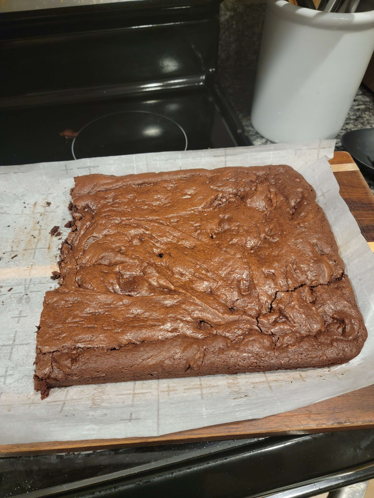

Simple, Delicious, Chocolatey, Brownies!!!

Go back to the list
Description
This is an adaptation of the Chainbaker's brownie recipe to fit a 9x13 pan, and I am not a baker. Follow at your own risk.
It makes simple, delicious, choclatey brownies. These are not diet food by any means but are easy and quick to make.
I prefer them cold, as they get a gooey, almost fudge like center while keeping the satisfying crunch of good bread
elsewhere. I'd recommend chilling them overnight, but 2 to 3 hours should suffice. It is very important to let them
cool completely before attempting to remove from the pan as the internals of the brownie is essentially a liquid
straight out of the oven.
Servings: 1 9x13 pan
Ingredients
- 400g sugar
- 200g flour
- 12 oz (340g) bittersweet or semisweet chocolate chips
- 12 oz (3 sticks) of salted butter
- 5 large eggs at room temp
Steps
- Pre-heat oven to 350 Farenheight
- Thouroughly mix eggs and sugar until smooth (4 to 5 minutes by hand or 2 to 3 on medium with a hand mixer). if there are lumps remve them by passing the mixture through a sieve.
- Mix the flour with the eggs/sugar until smooth batter forms.
- Melt the chocolate and butter in a medium saucepan on medium heat, stirring consistently, until both are melted and combined. This mixture does not need to get hot, just melted.
- Poor the chocolate into the batter and mix thoroughly, it should be quite thick, and smooth throughout.
- Spread the batter into a parchment lined 9x13, nonstick pan, and bake for 35 minutes or until the large cracks have deloped, and the center has deflated.
- Allow the brownies to cool completely before removing from the pan, while fresh these brownies do not hold their shape. Allow to cool for 3 to 4 hours or preferably overnight before enjoying.
This recipe is based on the efforts of Chainbaker, check out his recipe here
Go back to the list